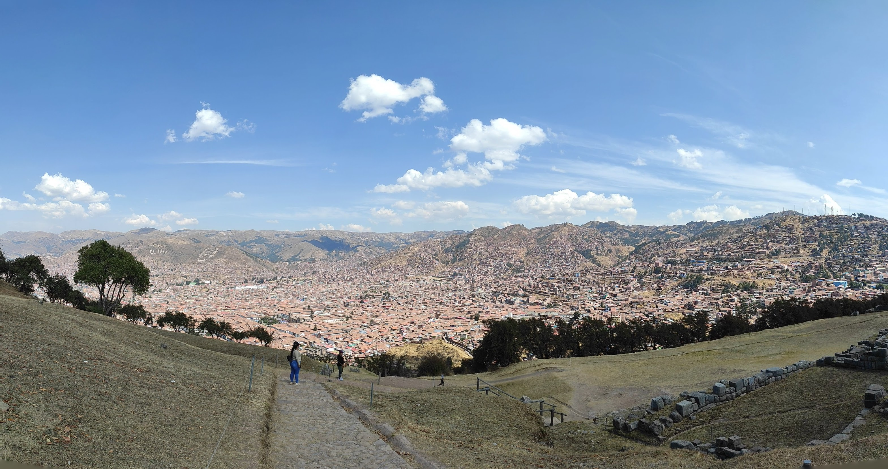
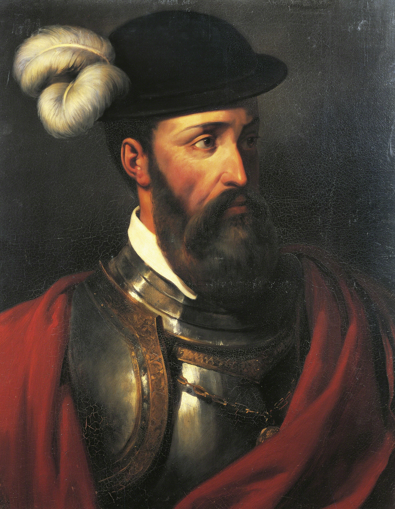

Foto tomada por: Lucas Peña
Los primeros habitantes de Cusco llegaron aproximadamente hace 3000 años. Los historiadores coinciden en que la primera migración se dió por la caída del reino de Tiahuanaco en Bolivia.
Durante el imperio Inca Cusco llegó a ser la ciudad más importante de los Andes y de América del Sur.
Al iniciar la conquista los españoles sabían que debían tomar la ciudad de Cusco, que era la capital de Imperio Inca.
El 15 de noviembre de 1533 los españoles guiados por Francisco Pizarro lograron entrar a la ciudad, un mes depués se inició el la fundición de los objetos valiosos de los Incas.

https://es.wikipedia.org/wiki/Francisco_Pizarro
El 23 de marzo de 1534, Francisco Pizarro estableció la Plaza de Armas en la ubicación que, ha día de hoy, todavía se mantiene.
Cusco fue tomada como cabecera administrativa del Virreinato en el sur del país.
La población cusqueña estuvo conformada principalmente por indigenas aristocraticos, a los cuales se les respetó algunos de sus fueros y privilegios. También había un gran número de españoles, lo cual llevó al mestizaje de la población.
El Perú declaró su independencia en 1821 y la ciudad de Cusco mantuvo su importancia dentro de la organización político administrativa del país.
{kind=link}